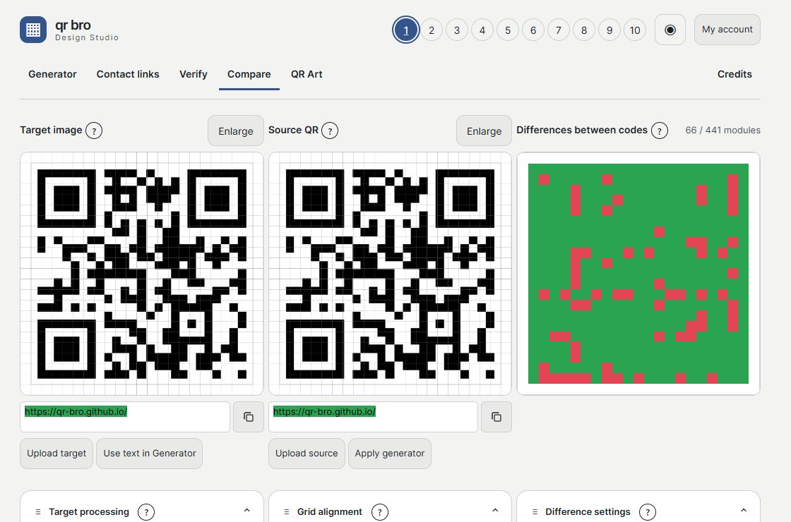
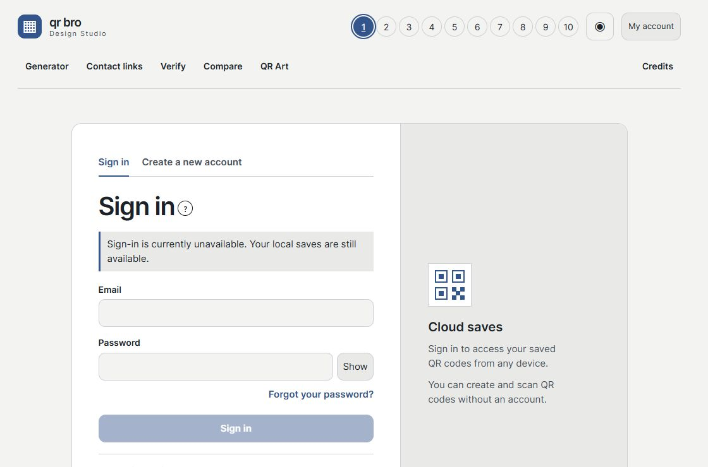
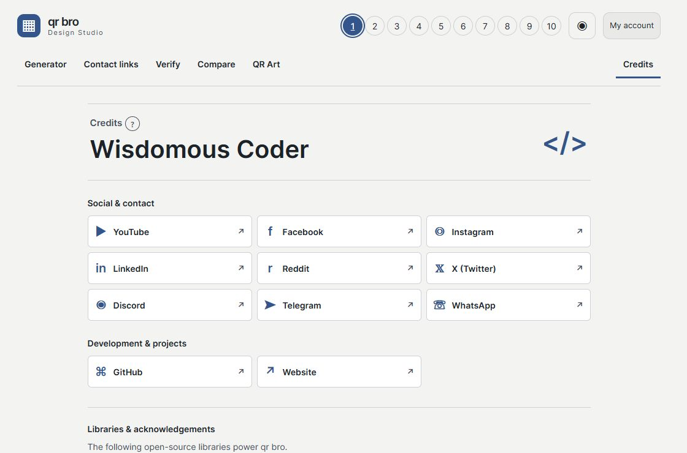

Používateľská príručka
Odporúčaný postup
Otvorte odkazy na kontakty a vytvorte prepojenie alebo skopírujte text, ktorý má obsahovať váš QR kód.

Otvorte generátor a vložte svoj odkaz alebo text do poľa obsahu QR.

Vyskúšajte rôzne okraje, farby a tvary, kým sa vám nebude páčiť kód v náhľade.

Kliknutím na veľké tlačidlo Stiahnuť PNG pod náhľadom uložíte svoj QR kód ako obrázok.

Existuje mnoho ďalších možností, z ktorých som neurobil snímky obrazovky alebo ich neodovzdal, ale máte predstavu.
Nikto mi za to neplatí a môj pes čaká hodinu na prechádzku.
Jedného dňa sa dostanem k zvyšku.
Generátor
Otvoriť v QR BRO ↗Zadajte adresu URL alebo text. Ukážka sa aktualizuje počas úprav. Stiahnite si PNG pre jeden obrázok alebo ZIP pre samostatné QR vrstvy.

QR obsah
Prilepte celý text, ktorý má skener prečítať.
Kódovanie
Vyberte opravu chýb a vzor masky. Vyššia korekcia ponecháva viac priestoru na obnovu poškodených údajov, ale môže zvýšiť hustotu.
Okraje
Nastavte tichú hranicu v moduloch. Štyri prehľadné moduly pomáhajú skenerom nájsť kód. Hluk, bezpečný priestor a ovládanie vrstiev menia dizajn okolia.
Pixely a značky
Vyberte si tvary modulov a upravte rohové značky samostatne. Naskenujte výsledok po zmene tvaru.
Farby
Vyberte si svetlé a tmavé farby alebo ich prevráťte. Udržujte dostatočný kontrast na skenovanie.
Pokročilé možnosti
Rozbalením tejto skupiny môžete ovládať hustotu, rozmery a perspektívu QR.
Verzia a veľkosť pixelov
Obmedzte rozsah verzií QR a upravte veľkosť pixelov. Ak obsah prekračuje limit verzie, skráťte ho alebo zvýšte maximum.
Transformovať
Upravte perspektívu na každej osi. Po použití deformácie skontrolujte exportovaný obrázok.
Mierka a pomer
Nastavte priblíženie náhľadu, veľkosť plátna, proporcie a priehľadnosť. Použite ovládacie prvky JSON na export alebo opätovné načítanie upraviteľných nastavení.
Kontaktné odkazy
Otvoriť v QR BRO ↗Najprv si vyberte platformu. Zadajte požadovaného príjemcu, napríklad medzinárodné telefónne číslo, používateľské meno alebo e-mail. Pridajte správu, ak je to podporované. Pre skupinové e-mailové polia oddeľte príjemcov čiarkami alebo medzerami. Skopírujte vygenerovaný odkaz alebo vyberte Vytvoriť QR, aby ste ho otvorili v generátore.

Overiť
Otvoriť v QR BRO ↗Nahrajte, vložte alebo prilepte obrázok QR. Prečítajte si dekódovaný obsah a stav skenovania. Skontrolujte kontrast, tichú zónu a hustotu, potom výsledok skopírujte alebo odošlite do generátora.

Rozdiely medzi obrázkami
Skontrolujte, ktoré pixely sa zmenili medzi pôvodným a spracovaným obrázkom.
Úpravy obrazu
Skúste zmeniť veľkosť, odtiene sivej, kontrast, jas alebo rozmazanie. Uzamknite nastavenie, aby ste ho zachovali počas náhodných pokusov. Porovnajte nový sken s originálom.
Porovnaj
Otvoriť v QR BRO ↗Nahrajte cieľový obrázok a zdrojový QR kód alebo použite ako zdroj aktuálny výstup generátora. Tretí náhľad mapuje rozdiely medzi modulmi. Vstup môžete zväčšiť a skopírovať jeho dekódovaný text.

Cieľové spracovanie
Pred porovnaním upravte odtiene sivej, kontrast, jas, rozmazanie a pixeláciu.
Zarovnanie mriežky
Použite cieľ alebo zdroj ako odkaz na zdieľanú mriežku. Ak majú obrázky rôzne okraje, vyberte nezávislé zarovnanie. Manuálne ovládacie prvky upravujú veľkosť mriežky a okraj.
Vzhľad mriežky
Povoľte mriežku, vyberte obrázky, na ktorých sa zobrazí, a upravte farbu čiary a nepriehľadnosť.
Nastavenia prekrytia
Povoľte prekrytie a upravte prelínanie a nepriehľadnosť na porovnanie prekrývajúcich sa detailov.
Nastavenia rozdielov
Vyberte si farebný režim pre zápasy, typ rozdielu alebo intenzitu. Vyberte moduly na bližšiu kontrolu. Zmeňte poradie výberov alebo zmeňte ich identifikačné farby.
Porovnávacie štatistiky
Ak chcete posúdiť vybrané porovnanie, prečítajte si počet nezhôd a priemerný jas.
Nastavenia korekcie
Upravte korekciu, ukážte ju, zvýraznite rozdiely a stiahnite si opravný obrázok alebo masku.
Môj účet a uloženie slotov
Otvoriť v QR BRO ↗Pomocou očíslovaných tlačidiel môžete prepínať medzi desiatimi lokálnymi projektmi. Ak chcete synchronizovať medzi zariadeniami, prihláste sa. Vytvorte si účet s e-mailom a heslom a potvrďte prostredníctvom e-mailového odkazu alebo kódu. K dispozícii sú aj Google a GitHub. Vo svojom účte môžete upravovať svoj profil, spravovať spôsoby prihlasovania a dvojfaktorové overenie, kontrolovať konflikty synchronizácie, zálohovať nastavenia alebo sa odhlásiť.

Vzhľad a jazyk
Otvoriť v QR BRO ↗Otvorte tlačidlo vzhľadu vedľa slotov na uloženie. Vyberte jazyk, tému a svetlý alebo tmavý režim. Váš výber jazyka si toto zariadenie zapamätá.

Kredity
Otvoriť v QR BRO ↗Otvorte poďakovanie pre odkazy tvorcov, knižnice a poďakovania. Podmienky používania sú prepojené v päte stránky.
